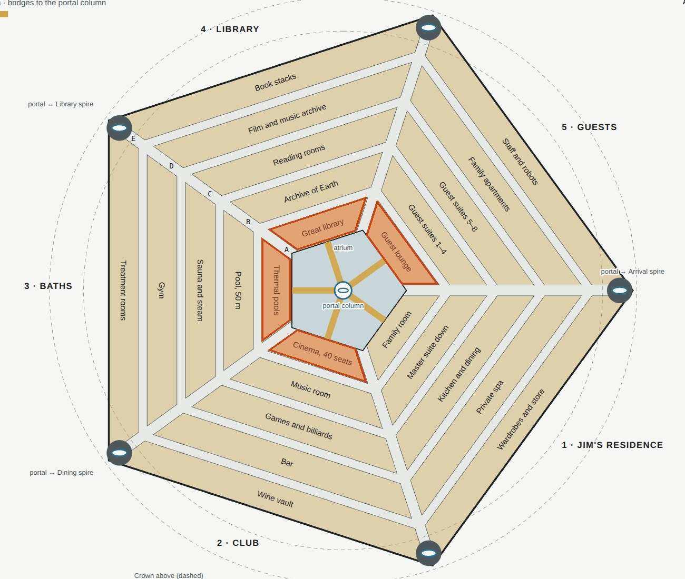
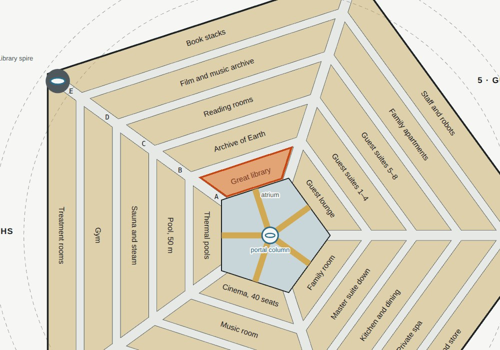
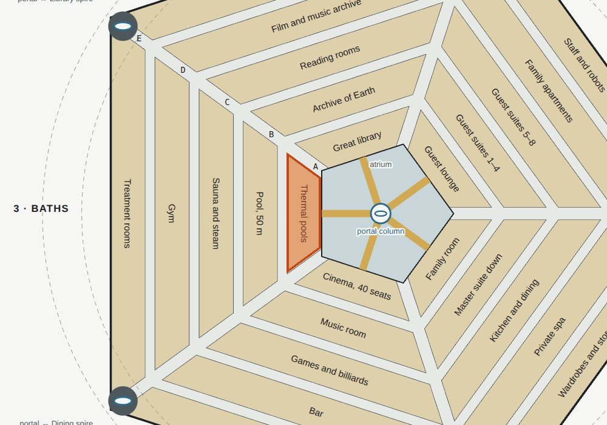
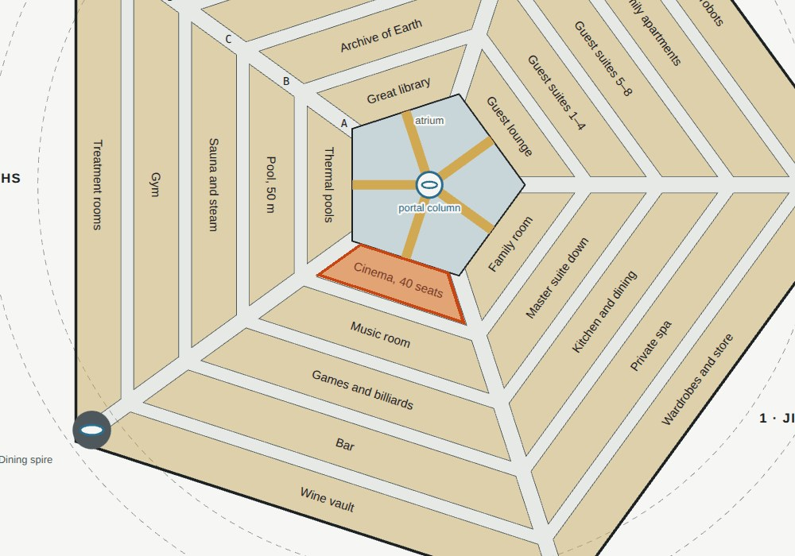
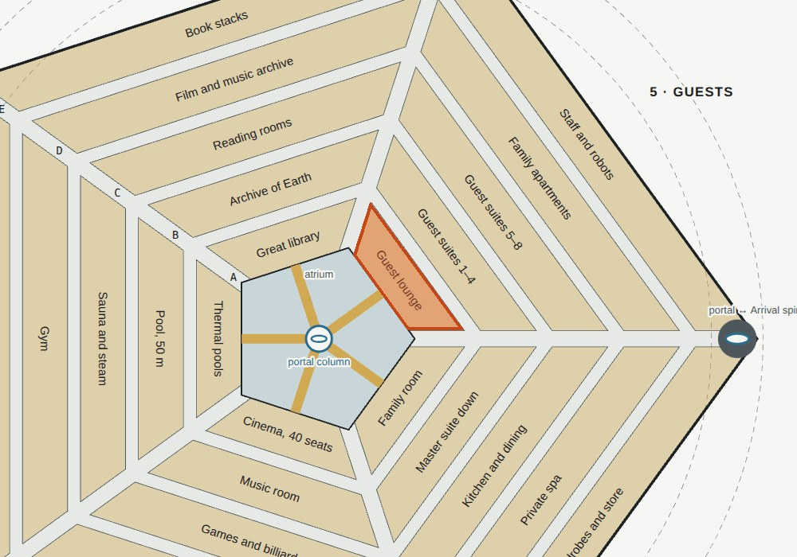

L1 · round the atrium
The atrium is the Pentagon's courtyard: a five-sided void 68 m deep under the Sun Well's lens, with terraces of olive trees and box hedges on every level, a bridge from each side to the portal column in the middle, and the sun court at the bottom. Ring A's rooms look into it through glass on all five sides. On L1 they are Jim's family room, the cinema, the thermal baths, the great library and the guest lounge.

The terrace, the bridge and the portal column
The way between the five sectors and between the levels: a terrace in front of every room, a bridge from each terrace to the portal column, and in the column the portals to every other level and up to the Crown. There are no lifts.
| Size | 48 m across at the glass; terraces 3.6 m deep; the void 41 m across; the column 10 m across; the sun court 44 m below L1. |
|---|---|
| Made of | Travertine paving; glass balustrades with bronze caps; a fluted column of coursed travertine; troughs of trailing vines; olive trees and box hedges. |
| Light | The Sun Well's lens over the void, 33.6 m across, round the top of the column. |
The sun court
The bottom of the atrium, 68 m down: a lawn with olive trees round a pool at the foot of the column, in the light of the lens 52 m above. Behind the glass all round are the halls of L5: the maglev, the freight portals, the seed vault and the rovers.
| Size | The void 41 m across; a paved walk round the lawn; causeways over the pool to the column's portals. |
|---|
The great library
Jim's library, and the reading room of the Archive of Earth, which keeps copies of the world's books, films and music. It is one room the full 7.6 m height of L1, with books on three walls on two storeys.
| Size | 28.8 m of glass, 49 m along the back wall, 13.9 m deep, 7.6 m high: 541 m². |
|---|---|
| Made of | Oak boards, plaster, walnut shelves and walnut ribs across the ceiling, brass rails and ladders. |
| In it | Tens of thousands of books; a gallery all round under the upper shelves, reached by a spiral stair; rolling ladders; three long reading tables with brass lamps; leather chairs by the glass; a globe of the Earth. |
| Light | The glass onto the atrium; eight skylights between the ribs; lights washing the shelves; reading lamps. |
| Next to | The guest lounge and the baths on the next sides; behind it the Archive of Earth and the reading rooms. |

The thermal baths
Warm water at three temperatures, for long soaks and for a body living in low gravity: the warm pool at 36 °C, the hot pool at 40 °C and the cold plunge at 14 °C. Behind it are the 50 m pool, the sauna and steam rooms, the gym and the treatment rooms.
| Size | The same hall as the library: 541 m², 7.6 m high. |
|---|---|
| Made of | Grey-green quartzite laid in thin courses, as in the baths at Vals, and in slabs on the floor; a ceiling of stone slabs with slots of daylight between them. |
| In it | A warm pool 15 m by 5.6 m with steps along one end; a round hot pool 4.6 m across; a cold plunge 3 m square and 1.6 m deep; lights under the water; eight loungers and stone tables along the glass; a stone bench with towels. |
| Light | Blades of sunlight from the slots in the ceiling; the glass onto the atrium; the pools lit from within. |

The cinema
Films with guests, or alone: forty seats in front of a screen 12 m wide, in the club next to Jim's residence.
| Size | An auditorium 16 m wide and 13.9 m deep in the club's front hall, 7.6 m high. |
|---|---|
| Made of | Walnut slats on the side walls; black velvet round the screen; a carpet of charcoal wool; seats in claret velvet. |
| In it | Four rows of ten seats, each row a step higher; a screen 12 m by 5 m; curtains drawn across the glass onto the atrium; a ceiling of 700 points of light, like stars. |
| Light | The screen itself, sconces, a cove along the walls, lights in the steps. |

The guest lounge
Where visitors from Earth gather. They come only once every 26 months and stay until the next launch window, so they have real apartments: eight guest suites above the lounge and behind it, and two family apartments.
| Rooms | The guest lounge, two storeys of 4 m with guest suites above; guest suites 1 to 8; family apartments; rooms for staff and robots |
|---|---|
| Pictures | Still to make. |
